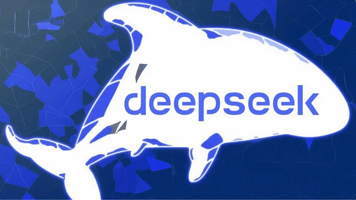
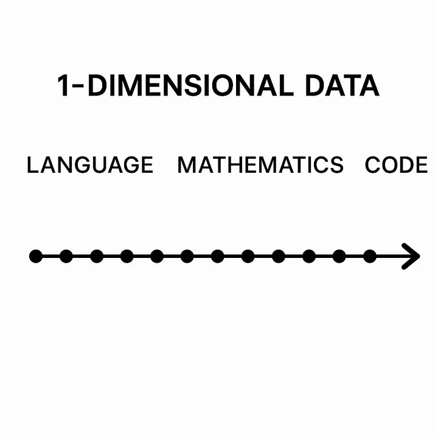
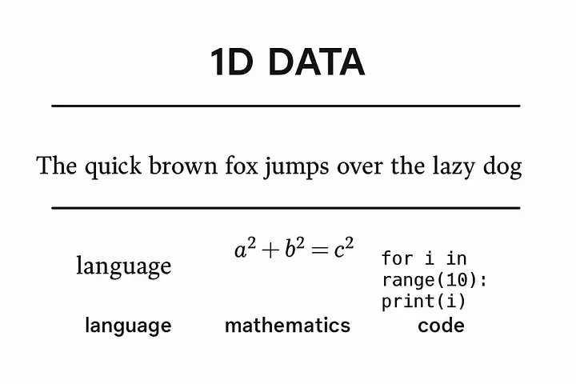
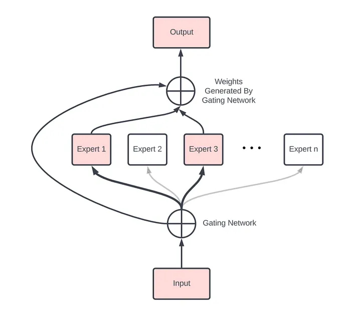
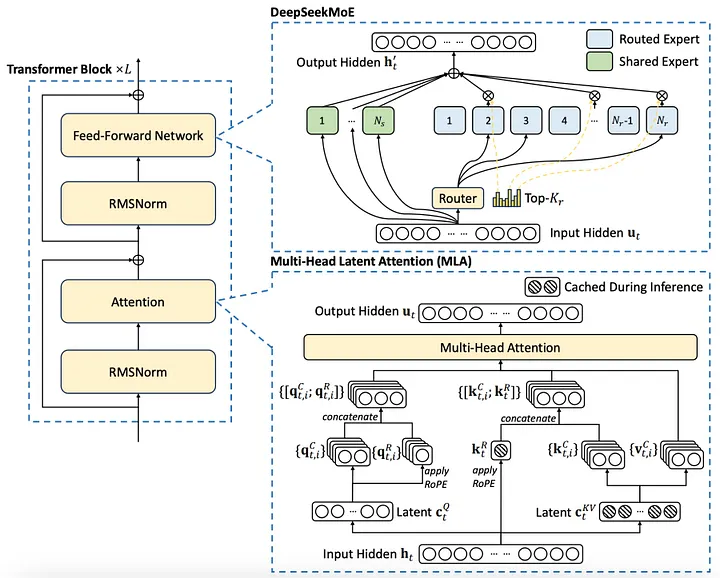
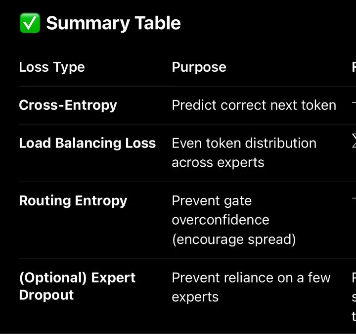

The Anatomy of DeepSeek A comprehensive Deep Dive into Inside the MoE – MHLA Transformer That’s Redefining Large Language Model Efficiency
Introduction
DeepSeek is a state-of-the-art model built for one-dimensional data — primarily language , math, and code. Unlike models focused on images or video, DeepSeek specializes in understanding sequences of symbolic tokens that convey structured meaning.
Understanding how models like DeepSeek handle 1D data is foundational to deep learning because language, mathematics, code, and even DNA are all expressed as linear sequences — one-dimensional data streams. Rather than reasoning or encoding symbolic knowledge, models like DeepSeek embed patterns across these sequences. They learn to correlate token structures statistically, allowing them to autocomplete, translate, and generate structured outputs with remarkable fluency — even without understanding in the human sense.
Within the broader landscape of machine learning, DeepSeek stands out as a modular Mixture of Experts (MoE) transformer. This architectural choice enables it to efficiently allocate different “expert” modules to handle diverse subtasks within a unified framework — boosting performance and scalability far beyond traditional dense transformers.
In this article, we’ll dissect DeepSeek’s architecture, explore how it processes sequences, and explain why its design is a key milestone on the path to more intelligent, flexible AI systems.
Text:Language , Math, and Code: The 1D Data Challenge
DeepSeek’s core strength lies in processing sequential data — sequences of tokens arranged in a meaningful order. This kind of data has unique characteristics that set it apart from images or video:
• Tokenization: Text, code, and math are first broken down into smaller units called tokens. Tokens can be words, subwords, symbols, or even individual characters, depending on the tokenizer. This step converts raw input into a sequence of discrete elements that the model can process.
• Order Sensitivity: The sequence order matters deeply. Changing the order of tokens usually changes the meaning or makes the input invalid — “cat sat on mat” is not the same as “mat sat on cat.” This contrasts with many image tasks where spatial relations can be more flexible.
• Long-Range Dependencies: Text and code often require understanding connections between tokens separated by many positions — like a variable defined early in code used much later, or pronouns referring to subjects from earlier sentences. Capturing these dependencies is a core challenge.
• Differences and Similarities Across Modalities:
• Language: Natural language is often ambiguous, context-rich, and flexible. It requires probabilistic modeling of grammar, semantics, and pragmatics.
• Code: Programming languages are highly structured and rule-bound, with strict syntax. Errors in code often cause immediate failure, making precision paramount.
• Mathematics: Mathematical expressions combine symbolic rigor with hierarchical nesting and logic, often requiring precise evaluation of operations and relations.
Despite these differences, all three share the common property of being one-dimensional sequences where context and token order determine meaning. DeepSeek’s architecture is designed to model these nuanced sequential patterns efficiently, enabling it to perform complex reasoning and generation tasks across text, math, and code.
Training at Scale: Machine learning engineers train text models like DeepSeek on massive corpora that span trillions of tokens, incorporating diverse sources of language, math, and code data. This immense scale helps the model generalize well and learn deep, nuanced patterns across different domains and styles. DeepSeek follows this workflow, using large-scale, high-quality datasets to master the complex distributions of sequential data.


All of these share a core structure:
• They are sequences of discrete tokens.
• They have syntax and semantics, with rules of composition.
• They are 1-dimensional in structure (token-by-token along a line).
Deep seek is defined by 2 core innovations:
1.Mixture of Experts (MoE)
DeepSeek leverages a powerful architectural design known as the Mixture of Experts (MoE), which significantly enhances its ability to handle the complexity and diversity of sequential data like text, code, and mathematics.
How DeepSeek Uses MoE:
DeepSeek’s architecture routes tokens differently depending on their nature — whether it’s natural language, programming code, or mathematical expressions. This selective routing helps the model better capture the unique patterns of each data type while maintaining a unified overall structure.
MoE models consist of multiple specialized sub-layers called “experts.” Instead of passing every input token through the entire model, DeepSeek dynamically routes each token to one or a few relevant experts based on its content. This dynamic routing allows the model to activate only the experts best suited to process a given piece of information.
• How MoE Routing Works:
The routing gate in a Mixture of Experts model uses a softmax-based mechanism — guided by multi-headed attention — to determine which expert MLPs each input token should be sent to. Instead of activating the entire network, only a small subset of expert layers (typically 1 — 4) are selected dynamically for each token.
These expert layers are multi-layer perceptrons (MLPs), each with dense weights. specialized for different patterns in the training data — throughout. language, code, or math. Inside each MLP, non-linear activation functions like ReLU (or GELU) are used between layers to pass signals forward and enable complex transformations.This sparse activation allows the model to scale efficiently: even though only a handful of experts are used per token, those experts are densely packed with neurons, trained to handle specific types of subproblems. This gives the model both high capacity and high specialization — without the compute burden of full-model activation.In essence, the MoE design empowers DeepSeek to be both broad in capability and deep in expertise, making it ideal for mastering the multifaceted challenges of 1D data.
• Benefits of MoE:
• Scalability: By activating only a subset of experts per token, MoE models scale to billions or even trillions of parameters without a proportional increase in computation per input.
• Specialization: Different experts can specialize in distinct aspects of language, code syntax, or mathematical logic, enabling more precise and nuanced processing.
• Efficiency: Because only relevant experts are activated for each token, the model optimizes resource usage, making training and inference more efficient despite its massive scale.This is why Deepseek was able to be made with as little as $6–10 million instead if hundreds of millions or billions are normal

Note: this is NOT a real representation of what the actual model looks like from in out to out out this image is meant to give a visual conception of routing gate and experts- 🧠 What is MHLA?
MHLA = Multi-Headed Latent Attention
It’s a specialized attention mechanism used later in the model, typically right before the Mixture of Experts (MoE) routing gate.
It does not directly replace the standard MHA used in the early transformer blocks — it complements it by extracting higher-order semantic patterns from already-processed token embeddings.
How MHLA Works
MHLA is an advanced attention mechanism designed to operate after many layers of processing, once the token representations have been transformed into richer latent embeddings.
Unlike standard Multi-Head Attention (MHA), which primarily compares surface-level relationships (like word proximity, syntax, or co-reference), MHLA is trained to detect abstract, high-level characteristics of each token or sequence fragment.
After the transformer has passed your token through many layers and built up a rich embedding, MHLA does this:
- Multi-head attention over internal features
• It splits the token representation into heads (as usual), but heads are focused on deeper latent features, not shallow patterns like word order or position.
- Latent abstraction
• These heads are trained to learn more abstract representations — e.g., whether a token is mathematical, logical, emotional,conversational, code-related, etc.
Each head in MHLA specializes in capturing different semantic or functional dimensions:
• One might attend to mathematical structure
• Another to programmatic syntax
• Another to emotional tone
• Others to physical description, biological data, conversation flow, etc.
• These heads don’t work in isolation — their outputs are concatenated, forming a richer latent vector that encodes a multifaceted understanding of the token or input sequence.
• In that way, MHLA functions more like a semantic classifier than a contextual linker.
- Compress and guide
• The output of MHLA is passed to the MoE routing gate, which uses a softmax activation to assign tokens to the most relevant expert MLPs.
🚦 Routing to Expert MLPs:
The resulting latent vector is passed into the routing gate, which:
• Uses a softmax-based gating function,
• Scores which expert MLPs are best suited to process that kind of token,
• Routes the token to the top-k experts (usually 1 — 4) — only those MLPs activate, saving compute.
⸻
✅ Why This Works:
Because each expert MLP is trained on certain latent patterns, the routing gate can select the most semantically aligned neurons without wasting energy on irrelevant ones.
So:
• MHLA provides semantic categorization,
• Routing gate performs token-expert matching,
• Expert MLPs do the actual transformation (using dense ReLU layers).
The fundamental layers of the transformer
There are 6 fundamental blocks ( layers) that make up the vast majority of the archecture and are the normal ones you see in the standard transformer that are crucial to cover :
🧱 Core Transformer Layers (The Foundation of DeepSeek)
Tokenization • What it does: Splits raw input (text, code, or math) into smaller units called tokens. These are typically subwords (e.g., “un-”, “break”, “-able”). • Why it matters: Transformers don’t work on raw characters — they operate on tokens that can be embedded into vectors. • For DeepSeek: Tokenization unifies the diverse 1D inputs (language, math, code) into a common vocabulary of tokens it can learn from. ⸻
- Embedding
• What it does: Transforms each token into a fixed-length vector (e.g., 768 or 2048 dimensions), learned during training.
• Why it matters: Converts discrete tokens into continuous numerical space, allowing the model to represent semantic and syntactic meaning.
• For DeepSeek: Embeddings help the model encode not just what a token is, but how it behaves across domains (e.g., how “=”, “if”, and “∑” show up in code/math/text).
. The more similar the observation is the closer they will be in the vector space because Deep learning models use clustering which is pattern recognition based embedding
⸻
- Positional Encoding
• What it does: Injects information about the position of tokens in the sequence.
• Why it matters: Transformers are permutation-invariant — they see input as a bag of tokens unless explicitly told about order.
• For DeepSeek: Especially critical for math/code, where positional relationships (e.g., nesting, order of operations) change meaning entirely.
⸻
⸻
🔁 Repeated Core Block: (Typically repeated dozens or even hundreds of times)
Each of the following layers is stacked repeatedly in a transformer block:
4.Multi-Head Attention (MHA)
• What it does: Each attention head learns to focus on different relationships between tokens (e.g., syntactic structure, semantic similarity).
• Why it matters: MHA allows the model to capture rich interactions between all tokens in a sequence in parallel, from different perspectives.
• For DeepSeek: MHA is how the model starts to learn logic, structure, and flow across language, math, and code — it’s the base pattern extraction layer.
- Residual Connections
• What they do: Skip connections that add the input of a layer directly to its output.
• Why they matter: Allow gradients to flow more effectively during training, prevent vanishing gradients, and stabilize deep networks.
• For DeepSeek: Without these, stacking 100+ layers would be almost impossible.
- Layer Normalization
Normalizes all features of a single input (observation).
• It ensures that the input to the next layer has mean 0 and standard deviation 1, per observation. to stabilize and speed up training.
• Used in Transformers, where batch size may vary or input sequences are processed independently.
• What it does: Normalizes each input across features to stabilize and speed up training.
• Why it matters: Prevents exploding/vanishing activations, improves generalization.
• For DeepSeek: Especially important for such a deep model with varied token types.
- Feedforward (MLP)
• What it does: A two-layer fully connected neural network applied independently to each token.
• Structure: Dense → ReLU → Dense
• Why it matters: Adds non-linearity and lets the model transform token representations beyond linear attention-based operations.
• For DeepSeek: One of the densest learnable components, where much of the per-token transformation happens.
8.ReLU Activations
RELU itself is about combining patterns from the sense feed-forward layer that precedes it and adding a positive bias to the end result
• It doesn’t make negatives positive (like absolute value would).
• It suppresses negatives entirely by zeroing them out.
• So the output becomes sparser, and biased toward positive activation values – yes.
• ReLU(x) =
• 0 if x < 0
• x if x ≥ 0
So if a neuron outputs -3 → ReLU sets it to 0.
If a neuron outputs +3 → ReLU keeps it.
No randomness. Just a simple function.
ReLU. is a simple, deterministic non-linear activation function that filters out all negative values and passes positive ones through unchanged – introducing non-linearity and sparsity into the network. This pushes the output distribution toward positive values and helps the model learn selectively activated patterns. This non-linearity is what lets deep networks learn complex patterns and functions.
- Softmax
Softmax is a mathematical function used throughout DeepSeek – in attention heads, routing gates, and auxiliary losses.
✅ What it does:
Softmax takes a list of raw scores (called logits) and turns them into probabilities that sum to 1.
This helps the model:
• Focus attention (assign weights to tokens)
• Decide which expert MLPs to activate
• Regularize outputs with entropy
🧮 Formula:
For a vector of scores z = [z₁, z₂, …, zₙ], softmax computes:
(z_i) =
Each output is between 0 and 1, and all add up to 1.
💡 Intuition:
• Larger values in z get boosted more (due to the exponential).
• The function amplifies confidence – a big gap in scores means sharper output (more “peaked”).
• Softmax lets the model “bet” more on some options than others – like choosing the top experts, or deciding which tokens to focus on in attention.
🔁 Where It Appears in DeepSeek:
• Attention Weights: Decides which tokens influence others.
• MHLA Routing Gate: Chooses which experts to activate.
• Auxiliary Losses: Encourages diversity via softmax entropy regularization.
🧠 Summary:
Most of DeepSeek’s architecture isn’t MHLA or MoE.
It’s these core blocks — repeated over and over — that build the depth and reasoning capacity of the model. The true innovations like MHLA and MoE rely on this strong backbone to work.
Up next: Multi-Headed Latent Attention (MHLA) — now that we’ve built the base, we’ll dive into how DeepSeek enriches its understanding before routing.
Bringing this all together:
The MoE-MLA Architecture in DeepSeek
The Mixture of Experts + Multi-Headed Latent Attention (MoE-MLA) architecture used in models like DeepSeek is structurally similar to a standard transformer for most of its depth — with key innovations near the final blocks that enable sparse, efficient, and specialized computation.
⸻
In standard transformers, multi-head attention (MHA) layers are interleaved with dense. forward, residuals, and normalization layers — not stacked side by side. This allows the model to extract low- and mid-level token relationships at each stage, then transform and pass those deeper into the network. Over 40 — 100 layers, the model gradually builds abstracted token embeddings that encode grammar, tone, structure, and early semantics.Think of it like a pattern hierarchy esley layers extracts surface level. patterns and it builds up to more complex ones.
But in DeepSeek, Multi-Headed Latent Attention (MHLA) occurs after this entire stack — operating on deep, contextualized embeddings. These heads don’t detect surface structure like noun-verb links. Instead, they learn to detect semantic categories: code, math logic, emotional tone, scientific reasoning, romantic dialogue, and so on.
MHLA heads specialize not through explicit labels, but via backpropagation: token embeddings that improve loss are reinforced, and heads gradually align with those latent abstractions. The model doesn’t “understand” physics or love — but it learns to associate certain token patterns with those themes based on how they affect prediction outcomes. These latent signals are then passed to the routing gate, which activates the most relevant expert MLPs to complete processing.
Top-k Routing: Regularization via Sparsity Constraints
In a Mixture-of-Experts model, the routing gate uses a softmax or top-k gating function to select a small number of expert MLPs(layers) (e.g. 2 out of 32) for each token.
To prevent collapse (e.g., the same experts always being chosen), many MoE systems add auxiliary losses, like:
• Load balancing loss: encourages tokens to be spread evenly across experts.
• Entropy regularization: encourages diversity in gating probabilities.
These same principles can apply to MHLA → MoE interactions:
• The MHLA output determines which latent dimensions get emphasized.
• The routing gate then selects experts based on this enriched representation.
• If the same heads dominate, auxiliary losses can push for head diversity.
This ensures the routing gate is hit choosing the same experts layers, it prevents over fitting

Note: this IS NOT to scale, its simply a visual conception, as explained earlier actual Deep learning models like deep seek are stacked with layers deep(100+) for state of the art language models though their components are simple and repetitive once understood.🧮 Loss Functions in DeepSeek
🔹 1. Main Loss: Token-Level Cross-Entropy Like most LLMs, DeepSeek uses a token-level cross-entropy loss to learn next-token prediction across its 1D training data (language, code, math).
This is the standard objective used in language models.
✅ What it does:
• For each token in a sequence, the model predicts the probability distribution of the next token.
• It compares that prediction to the actual token using cross-entropy, which penalizes the model if its prediction diverges from the correct one.
💡 Example:
Suppose the model is trying to predict the next word after “The capital of France is”.
• Prediction:
[Paris: 0.91, London: 0.04, Berlin: 0.02, Rome: 0.03]
• Actual:
Paris
Cross-entropy measures the negative log-probability of the correct class — in this case, -log(0.91). The closer the model gets to 1.0 probability for the right token, the lower the loss.This drives learning in the main transformer stack (attention layers, FFNs, embeddings).
This is the exact same process for solving mathematical equations and coding
But due to its Mixture-of-Experts (MoE) architecture, DeepSeek also incorporates auxiliary loss terms to regulate expert routing:
🔹 2. Auxiliary Loss #1: Load Balancing Loss
This is specific to the Mixture-of-Experts (MoE) structure in DeepSeek and similar models like GShard and Switch Transformer.
✅ Why it’s needed:
In an MoE model, each token is routed to only a few “expert” MLPs (e.g., 2 out of 32). But without regulation, the routing gate might start sending most tokens to just a few popular experts — leading to “expert collapse”.
🧠 What it does:
The load balancing loss encourages tokens to be evenly distributed across all available experts.
📘 Typical Formulation (Switch Transformer style):
Let:
• f_i(x): Fraction of tokens routed to expert i
• p_i(x): Fraction of total gate probability assigned to expert i
Then the loss is:
L_{} = _{i=1}^{N} f_i(x) p_i(x)
Where:
• N: Number of experts
• : A scaling hyperparameter
This loss reaches its minimum when tokens are evenly distributed across experts and when the gate is confident in those choices — without being overly deterministic.
⸻
🔹 3. Auxiliary Loss #2: Routing Entropy Regularization
Even with load balancing, the gating network might become too confident — always choosing the same top-1 or top-2 experts with near certainty. This hurts diversity and leads to overfitting.
✅ What it does:
Encourages softer, more distributed gate probabilities, promoting flexibility and exploration during training.
💡 How it works:
This loss maximizes the entropy of the softmax distribution output by the gating function.
Let:
• G(x): Softmax gate distribution over N experts
Then the entropy loss is:
L_{} = — _{i=1}^{N} G_i(x) (G_i(x))
• Higher entropy → less confident (more distributed) routing
• Lower entropy → overly confident (more peaky) routing
This is often added with a small weight (e.g., = 0.01) to gently regularize the routing gate.

Together, these auxiliary objectives help DeepSeek maintain sparse, efficient, and diverse expert usage across training — which is core to its scalability and performance.
Full stage by stage breakdown of all this:
🔹 Stage 1: Tokenization & Embedding
• Tokenization: Input is broken into discrete tokens.
• Embedding: Each token is converted into a dense vector representation.
• Positional Encoding: Injects information about token order (since attention has no innate order).
⸻
🔹 Stage 2: Repeated Transformer Blocks (the bulk of the network)
Each standard transformer block includes:
- Multi-Head Attention (MHA)
• Learns relationships between tokens across the sequence.
Residual Connection + LayerNorm
Feedforward MLP
• Dense → ReLU → Dense
• Shared across tokens; applied position-wise.
- Residual Connection + LayerNorm
💡 These blocks are repeated many times — 40, 80, even 100+ layers — in SOTA LLMs.
This stage makes up the majority of the model’s depth and parameter count.
⸻
🔹 Stage 3: MoE-MLA Block — DeepSeek’s Core Innovation
This stage introduces sparsity and specialization:
- Multi-Headed Latent Attention (MHLA)
• Functions similarly to regular MHA but operates over latent, abstracted representations after prior layers.
• Learns semantic task-aware patterns — not just surface-level attention.
• Guides routing decisions, not final outputs.
- Routing Gate
• Uses a softmax gating function to score and select top-k experts (typically 1 — 4) per token.
• Think of this as a token-specific router deciding which subnetwork is most qualified to handle this input.
• Sparse activation = massive efficiency boost.
- Expert MLPs (8 — 64 dense MLPs)
• These are standard Dense → ReLU → Dense layers.
• Only a few experts are activated per token.
• The density of these layers ensures the selected ones carry all the necessary information to process the input meaningfully.
Mini version of this :
Input Tokens
. ↓.
Token Embedding + Positional Encoding.
. ↓.
▸ Standard Transformer Blocks (Repeated 40 — 100+ times):
. • Multi-Head Attention (MHA)
. • Residual Connections.
. • Layer Normalization.
. • Feedforward MLP (Dense → ReLU → Dense)
. ↑ These layers extract lower- and mid-level token patterns.
. ↓.
Multi-Headed Latent Attention (MHLA)
. • Operates over latent representations.
. • Learns semantic/task-aware patterns.
. ↓.
Routing Gate (Softmax)
. • Dynamically selects top-k expert MLPs for each token.
. ↓.
Selected Expert MLPs (Sparse Activation):
. • Dense → ReLU → Dense.
. • Only 1 — 4 experts activated per token.
. ↓.
Recombine Outputs → Final Prediction (Token by Token)- language,mathematics or code
Why DeepSeek Matters (Even If It’s Not “Smarter”)
While DeepSeek may not dramatically outperform frontier models like GPT-4 or Claude 3 in raw intelligence, its breakthrough lies elsewhere:
🔹 Architectural Efficiency Over Raw Scale
DeepSeek’s Mixture-of-Experts + Multi-Headed Latent Attention architecture demonstrates that we can train large-scale language models more efficiently — by routing tokens to only the most relevant sub-networks (experts), compute is concentrated rather than wasted.
🔹 Cheaper Training at Similar Scale
This sparse activation allows for massive models with lower training costs, setting the stage for more organizations (not just trillion-dollar labs) to build competitive systems.
🔹 Proof of Scalable Token Contexts
DeepSeek also shows that longer token windows are becoming not just feasible, but practical. Architectures like this can support 100k+ token contexts, making real document understanding, codebase navigation, and multi-document reasoning more viable.
🔹 Architectural Innovation > Parameter Count
The lesson: future breakthroughs won’t come from just stacking more layers — they’ll come from smarter routing, specialization, and efficiency in model design.
Next up in this series: 🎨 The Anatomy of MidJourney: How State-of-the-Art Diffusion Models Paint from Noise